<!DOCTYPE html>


<html lang="en">


<head>
  <meta charset="utf-8" />
    
  <meta name="viewport" content="width=device-width, initial-scale=1, maximum-scale=1" />
  <title>
    高中最后的奇奇怪怪作业 |  
  </title>
  <meta name="generator" content="hexo-theme-ayer">
  
  <link rel="shortcut icon" href="/favicon.ico" />
  
  
<link rel="stylesheet" href="/SNSPage/dist/main.css">

  
<link rel="stylesheet" href="https://cdn.jsdelivr.net/gh/Shen-Yu/cdn/css/remixicon.min.css">

  
<link rel="stylesheet" href="/SNSPage/css/custom.css">

  
  
<script src="https://cdn.jsdelivr.net/npm/pace-js@1.0.2/pace.min.js"></script>

  
  

  

<link rel="alternate" href="/SNSPage/atom.xml" title="null" type="application/atom+xml">
</head>

</html>

<body>
  <div id="app">
    
      
      <canvas width="1777" height="841"
        style="position: fixed; left: 0px; top: 0px; z-index: 99999; pointer-events: none;"></canvas>
      
    <main class="content on">
      <section class="outer">
  <article
  id="post-P080"
  class="article article-type-post"
  itemscope
  itemprop="blogPost"
  data-scroll-reveal
>
  <div class="article-inner">
    
    <header class="article-header">
       
<h1 class="article-title sea-center" style="border-left:0" itemprop="name">
  高中最后的奇奇怪怪作业
</h1>
 

    </header>
     
    <div class="article-meta">
      <a href="/SNSPage/2017/03/19/P080/" class="article-date">
  <time datetime="2017-03-19T20:32:49.000Z" itemprop="datePublished">2017-03-19</time>
</a> 
  <div class="article-category">
    <a class="article-category-link" href="/SNSPage/categories/%E6%97%A5%E8%AE%B0/">日记</a>
  </div>
  
<div class="word_count">
    <span class="post-time">
        <span class="post-meta-item-icon">
            <i class="ri-quill-pen-line"></i>
            <span class="post-meta-item-text"> Word count:</span>
            <span class="post-count">1.4k</span>
        </span>
    </span>

    <span class="post-time">
        &nbsp; | &nbsp;
        <span class="post-meta-item-icon">
            <i class="ri-book-open-line"></i>
            <span class="post-meta-item-text"> Reading time≈</span>
            <span class="post-count">4 min</span>
        </span>
    </span>
</div>
 
    </div>
      


  
    <div class="article-entry" itemprop="articleBody">
       
  <blockquote><p>这里是高中最后申请大学时,为艺术类学校准备的作品.<br>也是从这里开始作为创作者的我开始变得不同.<br>大学选择的是数学专业,几年来对于思维方式和追求目标都跟我的起点完全不同.<br>不以好坏来评论,这里仅供保留当年的痕迹.</p>
</blockquote>
<br>
<br>
<br>
#1.
<a data-fancybox="gallery" href="P080_1.jpg"></a>
<a data-fancybox="gallery" href="P080_2.jpg"></a>
<a data-fancybox="gallery" href="P080_3.jpg">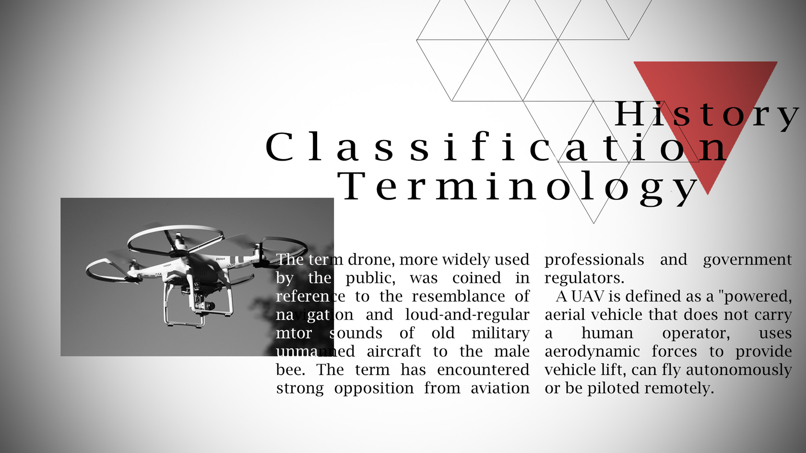</a>
<a data-fancybox="gallery" href="P080_4.jpg"></a>
还是上个礼拜的事情.

<p>以为portfolio都准备好了的我跟老师休了天假.然后发现最后一个学校要求我完全没做过的杂志设计的时候被老师一通臭骂.<br>到最后的一天的时候和老师心态平稳和平和气.<br>你不骂我我不怨你埋头苦干只要做完就是上天最大的恩赐.<br>这是那时赶出来的排版练习.<br>还是为Wikipedia乱摘来的词句,考官没有认真读真是太好了.<br><br><br><br><br><br><br>#2.<br>同样也是那段时间赶的作品.</p>
<p>画了我的书架.我的书架在我心中可是爱抖露级别的,不过稍微改了一点因为不能再卡通了.<br>说起来准备portfolio这段时间最大的痛苦就是这里了.因为报的专业分别是animation,illustration and graphic design.<br>所以考完了动画就很痛苦.</p>
<p>老师:你为什么画什么都那么卡通.再写实一点再写实一点.<br><a data-fancybox="gallery" href="P080_5.jpg">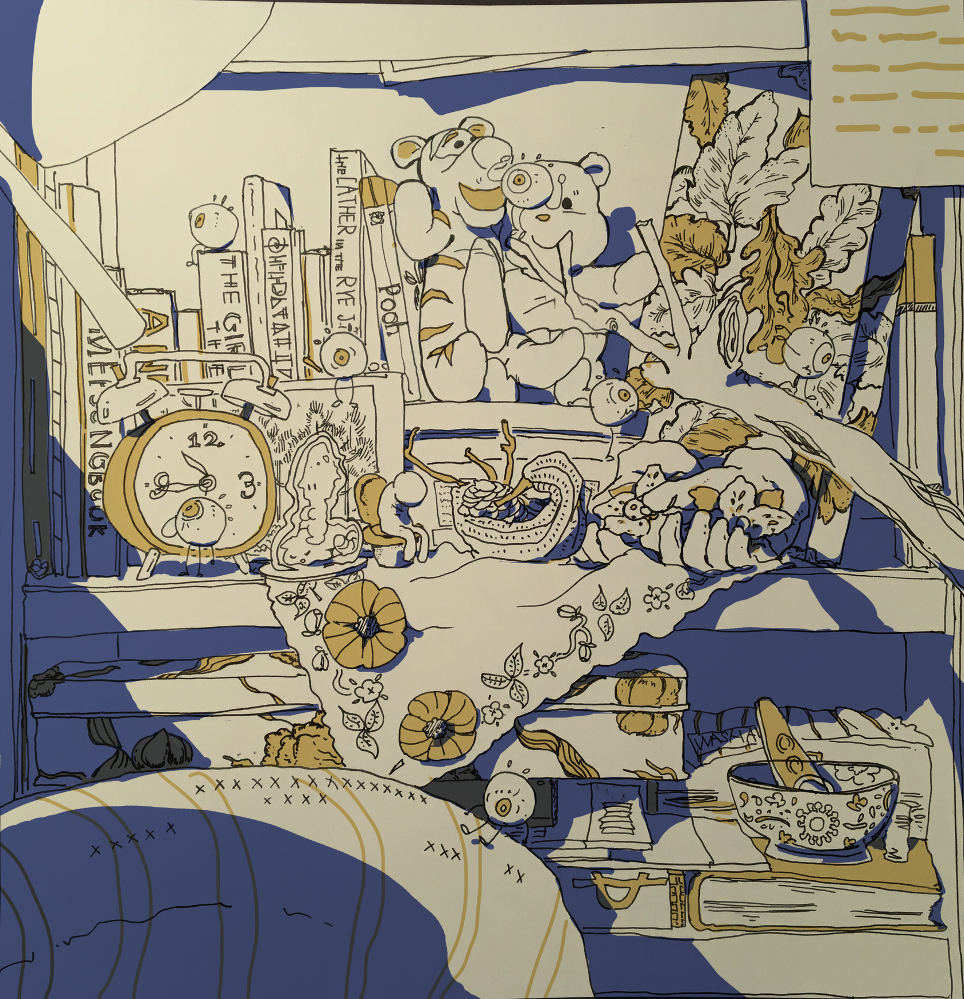</a><br><a data-fancybox="gallery" href="P080_6.jpg">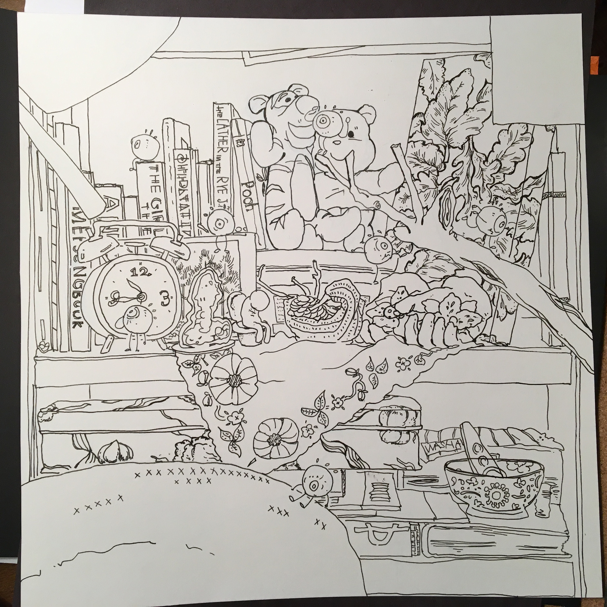</a><br><br><br><br><br><br><br>#3.<br>这张我很喜欢.是水彩和马克笔.</p>
<p>三所学校的portfolio用上了.</p>
<p>nightschool的时候遇上了一位很喜欢blind contour的老师,就是不看着自己的纸只看着要画的东西画画,画出来的线条就很有意思了.<br>我就靠着这个技巧试图隐藏我根本没有的素描功底.<br>这张讲的是人…与…关系?<br>第一张是stopping,讲的是自身.<br>第二张是turning,讲的是做出选择.<br>第三张是walking,讲的是短时间的关系.<br>最后一张是following,讲的是长时间的关系,像是亲子关系.<br><a data-fancybox="gallery" href="P080_7.jpg">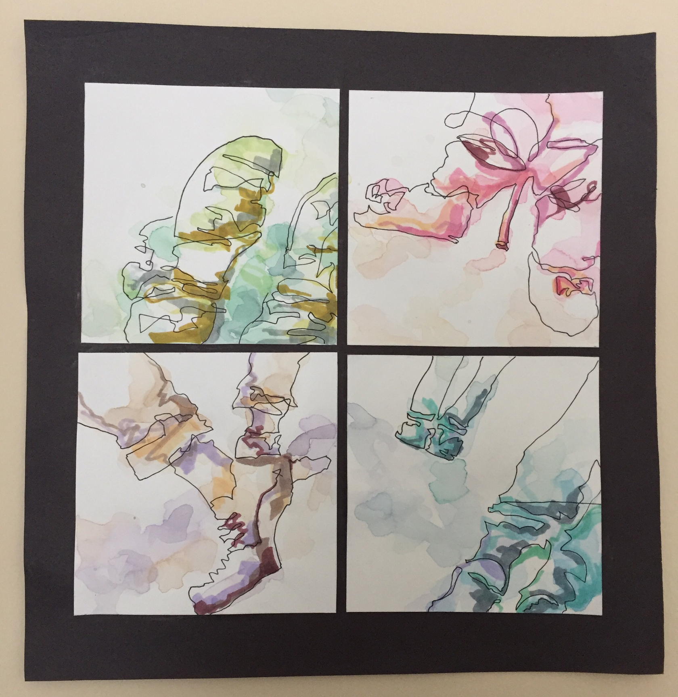</a><br><br><br><br><br><br><br>#4.<br>这张被老师砍掉了.<br>掰着手指数油画有了,水彩有了,电脑画有了,钢笔画有了.<br>老师提议我画张素描,然而画到一半被她叫停.<br>【这走形太严重了,百分之五十都不到,还是算了吧】</p>
<p>明智的选择.<br>然后这张是想着画像电脑平铺一样的水粉.<br>所以我所想到的是重复的元素.像我新年明信片那样画.<br>重复的元素一定情况下看着的确很爽快,但是又有些没有重点,太啰嗦的问题.<br>不过老师砍掉的原因是【你的涂的太草了】<br><a data-fancybox="gallery" href="P080_8.jpg">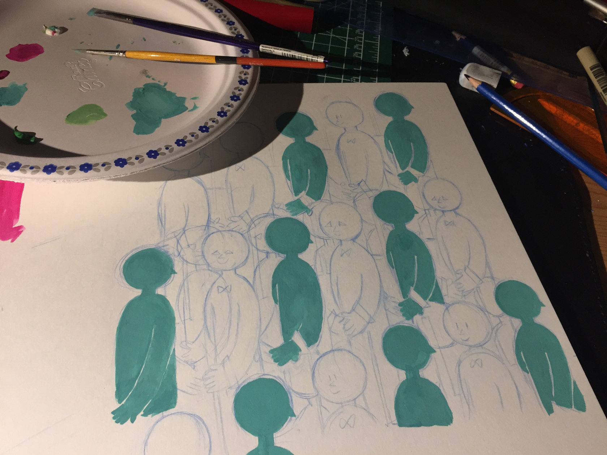</a><br><br><br><br><br><br><br>#5.<br>所报考的学校有一所很喜欢抽象画.之前那些鞋子也是因此而尝试的.<br>这张是油画,那天我…我就带了两罐颜色,深蓝和白绿.还有一点点的黄.<br>油画平铺起来的效果,真的,不好.<br>老师【正常的画法是调一种颜色不超过三笔】<br>原来是这样啊.<br><br><br>第二天:</p>
<p>【老师我觉得颜色好难看.】<br>【那倒没有】<br>过会儿她又说<br>【但是没有那么好看,倒是真的】<br>老师我喜欢你的诚实.<br>于是后面加上了贴了报纸的木板,想着简配上繁的效果会不会好一些.<br>最后达成的就是这很微妙的效果了.<br>【老师你觉得考官会喜欢这幅吗】<br>【那要看你怎么解释这意思了】<br>好有哲理.<br>难道这是抽象画的本质吗.</p>
<br>

<p>顺便一提这幅画的时候我想的是【三人成虎】的故事.<br>画的是三个人与一只猴子.说小孩也可以啦.<br>如果猴子所说的话被三个人所叙述就会变得有假象道理也好,三个人所说的话被猴子所模仿也好,是指虚假的语言重量与人数的关系.<br>是不是觉得这幅画更有道理了一点(何.<br><a data-fancybox="gallery" href="P080_9.jpg">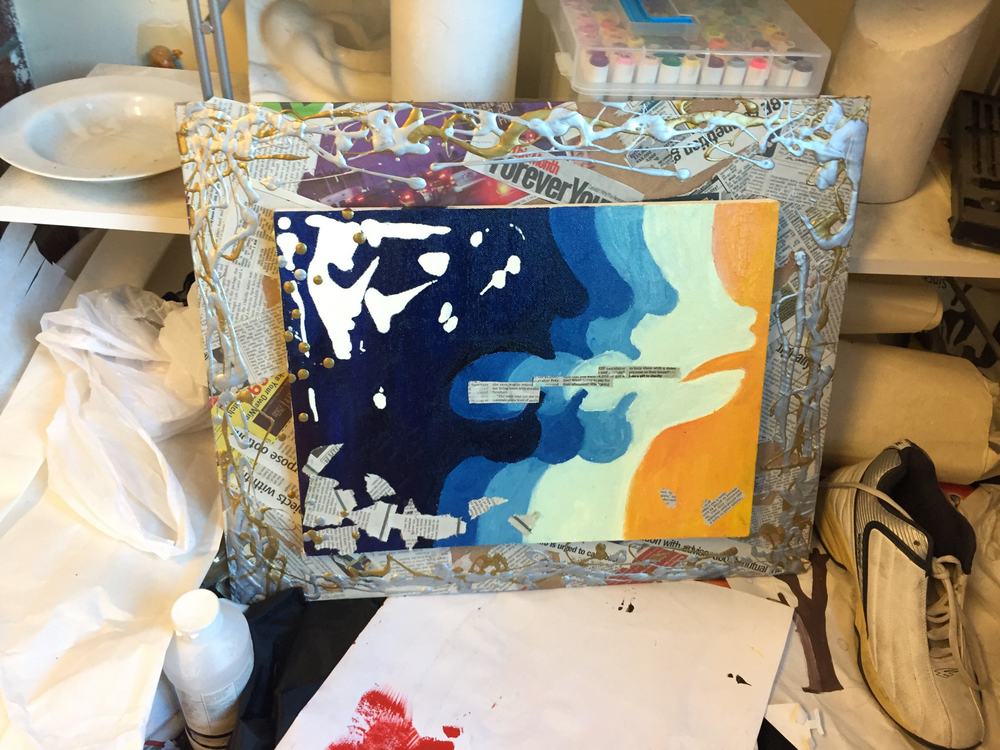</a><br><br><br><br><br><br><br>#6.<br>画室的混乱让这玩意看起来更乱了ww.<br>剪贴画.<br>我还是挺喜欢这个#postme的想法的.<br>社交软件上的各种拍食物,拍风景,拍自己等等等等.<br>不过最后效果不是很好就是了.</p>
<p>贴的时候觉得左下角实在太密但是老师特意说把上面空出来.<br>解释原因的时候她扔了几个纸团在上面,画一下子看起来乱得不像画了.<br>原来如此.<br><a data-fancybox="gallery" href="P080_10.jpg">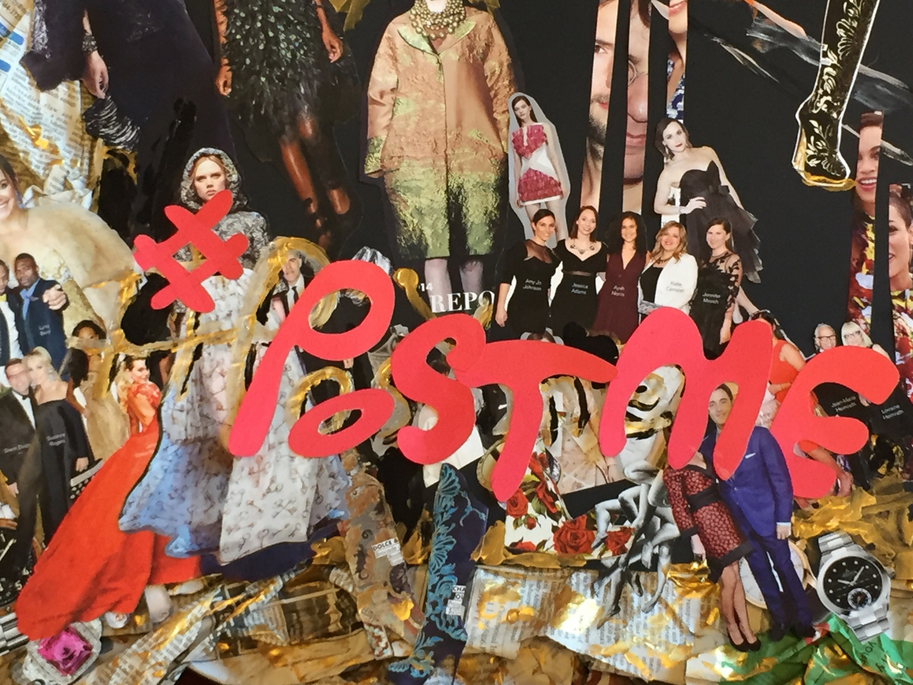</a><br><a data-fancybox="gallery" href="P080_11.jpg">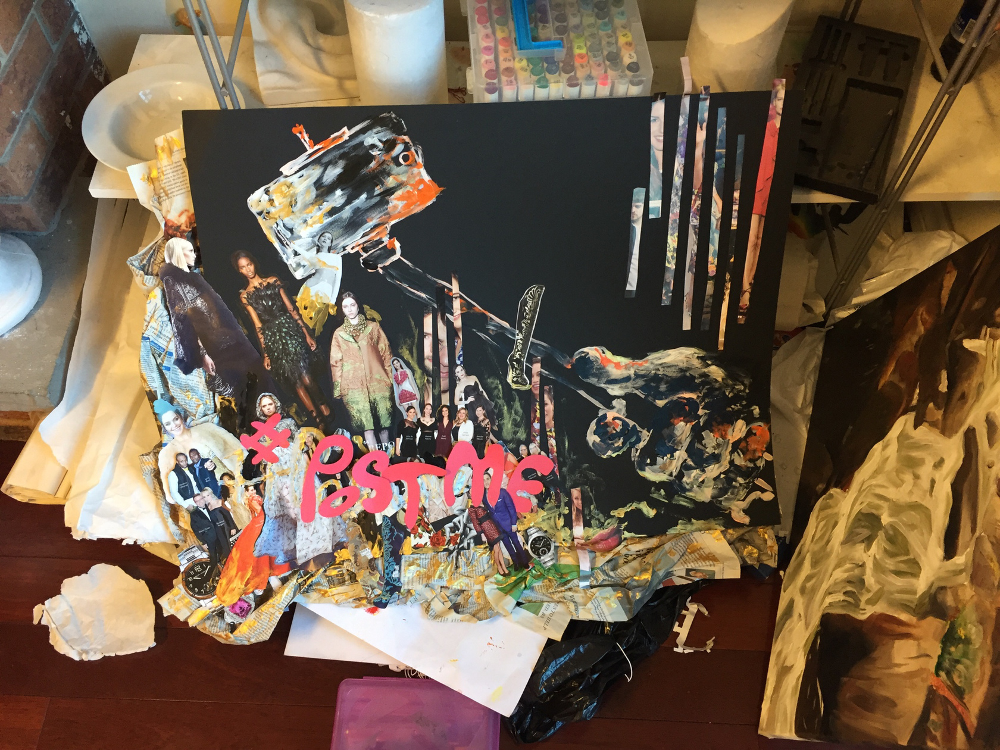</a><br><br><br><br><br><br><br>#7.<br>这幅是丙烯.也是那几天像地狱一样赶出来的.<br>我高中的时候和丙烯和黑白报相处了很久,然而并不能画出没有笔触的细腻的东西…<br>画的主旨.<br>老师【这幅讲了生命的活力,春天的涌动,一切欣欣向荣.】<br>我硬生生把我想的姨妈痛给憋回去了.</p>
<p><em>虽说本质是玩颜色</em><br><a data-fancybox="gallery" href="P080_12.jpg">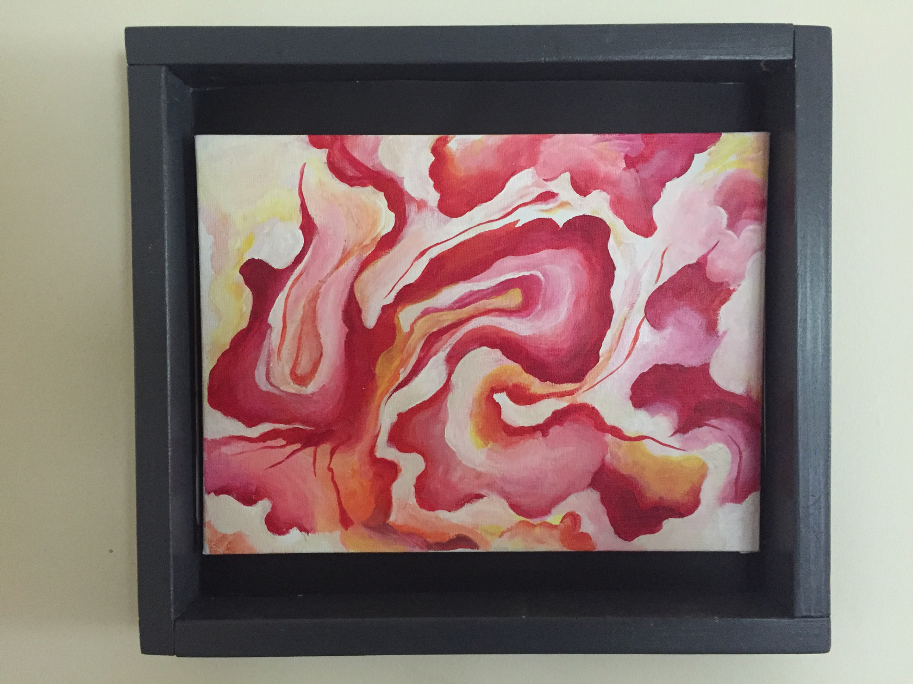</a><br><br><br><br><br><br><br>#8.<br>Alex家的狗,名字叫Manny.<br>为了送学校改了一点.<br>因为要送给Alex,所以我执意用油画继续画,老师提议用丙烯.<br>结果是没有干.<br>考官的手碰到了颜料.</p>
<p>都是泪啊.<br><a data-fancybox="gallery" href="P080_13.jpg">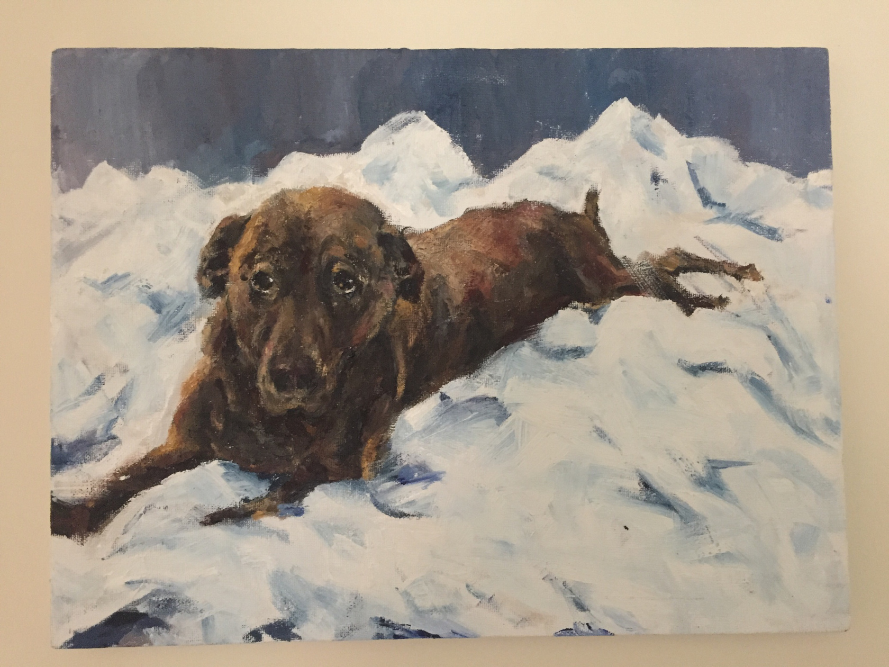</a><br><br><br><br><br><br><br>#9.<br>最后一幅!!</p>
<p>这幅加了点细节送上去了.<br>为什么以前的我形画不准但是画出来的东西很有意思呢……</p>
<p>好好复健(哭.<br><a data-fancybox="gallery" href="P080_14.jpg">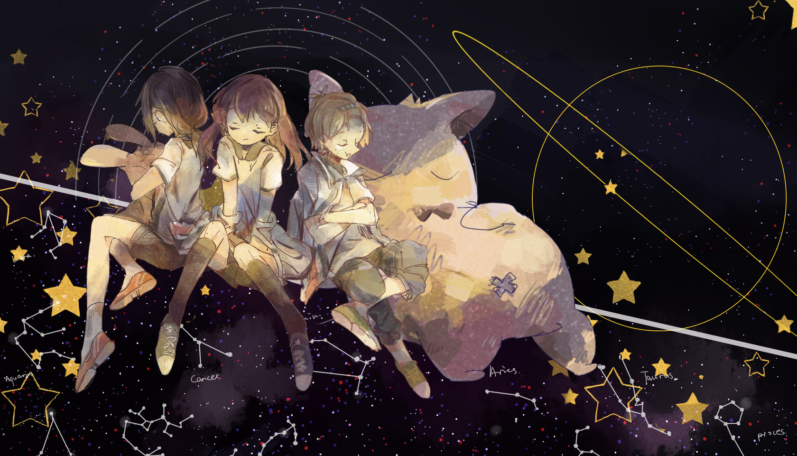</a><br><br><br><br><br><br><br>#10.<br>明明说好的最后一张了但是还是想拍下这份ww.<br>考动画的portfolio像是画考卷.<br>第一次认真画透视,也是很拼的.<br>我想我是努力过了的.进不了也问心无愧.<br><a data-fancybox="gallery" href="P080_15.jpg">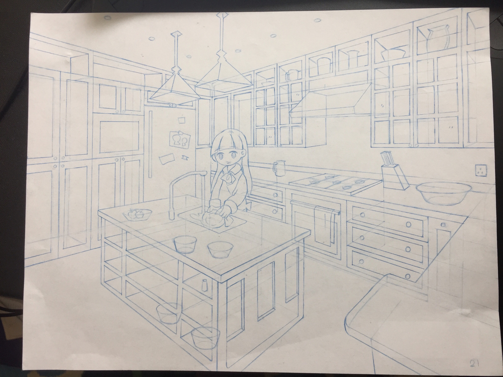</a><br><a data-fancybox="gallery" href="P080_16.jpg">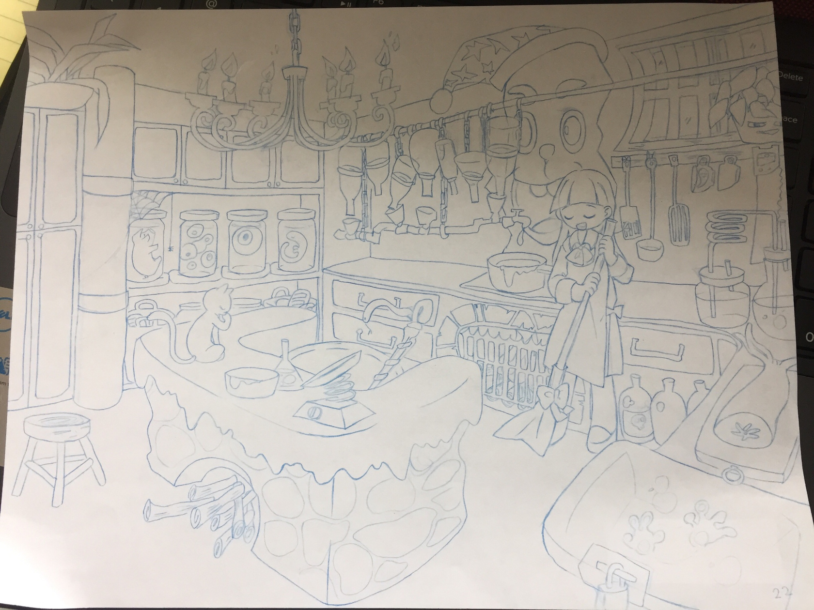</a></p>
 
      <!-- reward -->
      
    </div>
    

    <!-- copyright -->
    
    <footer class="article-footer">
       
  <ul class="article-tag-list" itemprop="keywords"><li class="article-tag-list-item"><a class="article-tag-list-link" href="/SNSPage/tags/%E5%A5%87%E6%80%AA%E4%BD%9C%E4%B8%9A/" rel="tag">奇怪作业</a></li><li class="article-tag-list-item"><a class="article-tag-list-link" href="/SNSPage/tags/%E6%9D%82%E8%B0%88/" rel="tag">杂谈</a></li></ul>

    </footer>
  </div>

   
  <nav class="article-nav">
    
      <a href="/SNSPage/2017/03/21/P050/" class="article-nav-link">
        <strong class="article-nav-caption">Prev</strong>
        <div class="article-nav-title">
          
            老兔和朋友的rpg大冒险
          
        </div>
      </a>
    
    
      <a href="/SNSPage/2017/01/29/P049/" class="article-nav-link">
        <strong class="article-nav-caption">Next</strong>
        <div class="article-nav-title">电器和我</div>
      </a>
    
  </nav>

  
     
</article>

</section>
      <footer class="footer">
  <div class="outer">
    <ul>
      <li>
        Copyrights &copy;
        2015-2020
        <i class="ri-heart-fill heart_icon"></i> Mazui
      </li>
    </ul>
    <ul>
      <li>
        
      </li>
    </ul>
    <ul>
      <li>
        
      </li>
    </ul>
    <ul>
      
    </ul>
    <ul>
      <li>
        <!-- cnzz统计 -->
        
      </li>
    </ul>
  </div>
</footer>
      <div class="float_btns">
        <div class="totop" id="totop">
  <i class="ri-arrow-up-line"></i>
</div>

<div class="todark" id="todark">
  <i class="ri-moon-line"></i>
</div>

      </div>
    </main>
    <aside class="sidebar on">
      <button class="navbar-toggle"></button>
<nav class="navbar">
  
  <div class="logo">
    <a href="/SNSPage/"></a>
  </div>
  
  <ul class="nav nav-main">
    
    <li class="nav-item">
      <a class="nav-item-link" href="/SNSPage/">home</a>
    </li>
    
    <li class="nav-item">
      <a class="nav-item-link" href="/SNSPage/archives">archives</a>
    </li>
    
    <li class="nav-item">
      <a class="nav-item-link" href="/SNSPage/categories">categories</a>
    </li>
    
    <li class="nav-item">
      <a class="nav-item-link" href="/SNSPage/tags">tags</a>
    </li>
    
    <li class="nav-item">
      <a class="nav-item-link" target="_blank" rel="noopener" href="https://www.mihuashi.com/users/mazui">comm</a>
    </li>
    
    <li class="nav-item">
      <a class="nav-item-link" href="/SNSPage/about">about</a>
    </li>
    
  </ul>
</nav>
<nav class="navbar navbar-bottom">
  <ul class="nav">
    <li class="nav-item">
      
      <a class="nav-item-link nav-item-search"  title="Search">
        <i class="ri-search-line"></i>
      </a>
      
      
      <a class="nav-item-link" target="_blank" href="/SNSPage/atom.xml" title="RSS Feed">
        <i class="ri-rss-line"></i>
      </a>
      
    </li>
  </ul>
</nav>
<div class="search-form-wrap">
  <div class="local-search local-search-plugin">
  <input type="search" id="local-search-input" class="local-search-input" placeholder="Search...">
  <div id="local-search-result" class="local-search-result"></div>
</div>
</div>
    </aside>
    <script>
      if (window.matchMedia("(max-width: 768px)").matches) {
        document.querySelector('.content').classList.remove('on');
        document.querySelector('.sidebar').classList.remove('on');
      }
    </script>
    <div id="mask"></div>

<!-- #reward -->
<div id="reward">
  <span class="close"><i class="ri-close-line"></i></span>
  <p class="reward-p"><i class="ri-cup-line"></i>请我喝杯咖啡吧~</p>
  <div class="reward-box">
    
    <div class="reward-item">
      
      <span class="reward-type">支付宝</span>
    </div>
    
    
    <div class="reward-item">
      
      <span class="reward-type">微信</span>
    </div>
    
  </div>
</div>
    
<script src="/SNSPage/js/jquery-2.0.3.min.js"></script>


<script src="/SNSPage/js/lazyload.min.js"></script>

<!-- Tocbot -->


<script src="/SNSPage/js/tocbot.min.js"></script>

<script>
  tocbot.init({
    tocSelector: '.tocbot',
    contentSelector: '.article-entry',
    headingSelector: 'h1, h2, h3, h4, h5, h6',
    hasInnerContainers: true,
    scrollSmooth: true,
    scrollContainer: 'main',
    positionFixedSelector: '.tocbot',
    positionFixedClass: 'is-position-fixed',
    fixedSidebarOffset: 'auto'
  });
</script>

<script src="https://cdn.jsdelivr.net/npm/jquery-modal@0.9.2/jquery.modal.min.js"></script>
<link rel="stylesheet" href="https://cdn.jsdelivr.net/npm/jquery-modal@0.9.2/jquery.modal.min.css">
<script src="https://cdn.jsdelivr.net/npm/justifiedGallery@3.7.0/dist/js/jquery.justifiedGallery.min.js"></script>

<script src="/SNSPage/dist/main.js"></script>

<!-- ImageViewer -->

<!-- Root element of PhotoSwipe. Must have class pswp. -->
<div class="pswp" tabindex="-1" role="dialog" aria-hidden="true">

    <!-- Background of PhotoSwipe. 
         It's a separate element as animating opacity is faster than rgba(). -->
    <div class="pswp__bg"></div>

    <!-- Slides wrapper with overflow:hidden. -->
    <div class="pswp__scroll-wrap">

        <!-- Container that holds slides. 
            PhotoSwipe keeps only 3 of them in the DOM to save memory.
            Don't modify these 3 pswp__item elements, data is added later on. -->
        <div class="pswp__container">
            <div class="pswp__item"></div>
            <div class="pswp__item"></div>
            <div class="pswp__item"></div>
        </div>

        <!-- Default (PhotoSwipeUI_Default) interface on top of sliding area. Can be changed. -->
        <div class="pswp__ui pswp__ui--hidden">

            <div class="pswp__top-bar">

                <!--  Controls are self-explanatory. Order can be changed. -->

                <div class="pswp__counter"></div>

                <button class="pswp__button pswp__button--close" title="Close (Esc)"></button>

                <button class="pswp__button pswp__button--share" style="display:none" title="Share"></button>

                <button class="pswp__button pswp__button--fs" title="Toggle fullscreen"></button>

                <button class="pswp__button pswp__button--zoom" title="Zoom in/out"></button>

                <!-- Preloader demo http://codepen.io/dimsemenov/pen/yyBWoR -->
                <!-- element will get class pswp__preloader--active when preloader is running -->
                <div class="pswp__preloader">
                    <div class="pswp__preloader__icn">
                        <div class="pswp__preloader__cut">
                            <div class="pswp__preloader__donut"></div>
                        </div>
                    </div>
                </div>
            </div>

            <div class="pswp__share-modal pswp__share-modal--hidden pswp__single-tap">
                <div class="pswp__share-tooltip"></div>
            </div>

            <button class="pswp__button pswp__button--arrow--left" title="Previous (arrow left)">
            </button>

            <button class="pswp__button pswp__button--arrow--right" title="Next (arrow right)">
            </button>

            <div class="pswp__caption">
                <div class="pswp__caption__center"></div>
            </div>

        </div>

    </div>

</div>

<link rel="stylesheet" href="https://cdn.jsdelivr.net/npm/photoswipe@4.1.3/dist/photoswipe.min.css">
<link rel="stylesheet" href="https://cdn.jsdelivr.net/npm/photoswipe@4.1.3/dist/default-skin/default-skin.min.css">
<script src="https://cdn.jsdelivr.net/npm/photoswipe@4.1.3/dist/photoswipe.min.js"></script>
<script src="https://cdn.jsdelivr.net/npm/photoswipe@4.1.3/dist/photoswipe-ui-default.min.js"></script>

<script>
    function viewer_init() {
        let pswpElement = document.querySelectorAll('.pswp')[0];
        let $imgArr = document.querySelectorAll(('.article-entry img:not(.reward-img)'))

        $imgArr.forEach(($em, i) => {
            $em.onclick = () => {
                // slider展开状态
                // todo: 这样不好，后面改成状态
                if (document.querySelector('.left-col.show')) return
                let items = []
                $imgArr.forEach(($em2, i2) => {
                    let img = $em2.getAttribute('data-idx', i2)
                    let src = $em2.getAttribute('data-target') || $em2.getAttribute('src')
                    let title = $em2.getAttribute('alt')
                    // 获得原图尺寸
                    const image = new Image()
                    image.src = src
                    items.push({
                        src: src,
                        w: image.width || $em2.width,
                        h: image.height || $em2.height,
                        title: title
                    })
                })
                var gallery = new PhotoSwipe(pswpElement, PhotoSwipeUI_Default, items, {
                    index: parseInt(i)
                });
                gallery.init()
            }
        })
    }
    viewer_init()
</script>

<!-- MathJax -->

<!-- Katex -->

<!-- busuanzi  -->

<!-- ClickLove -->

<!-- ClickBoom1 -->

<!-- ClickBoom2 -->


<script src="/SNSPage/js/clickBoom2.js"></script>


<!-- CodeCopy -->

<!-- CanvasBackground -->


    
  </div>
</body>

</html>